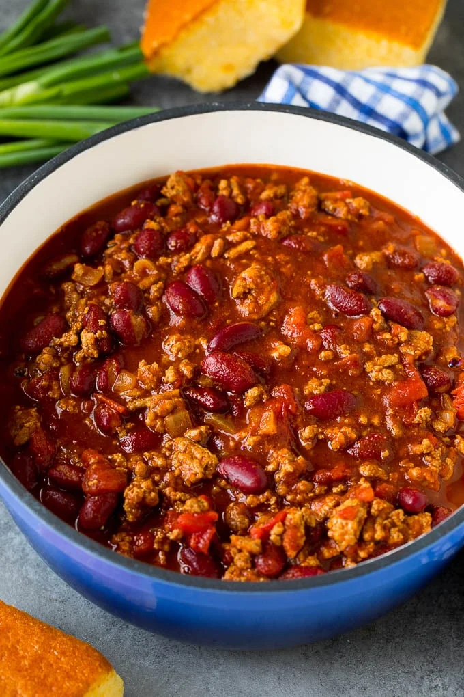

Delicious Chili Recipe

Description
A delicious chili recipe taught to me by Esther. Great stuff. Amazing. Tasty. Delicious. Savory. Very healthy. Lots of protein. Did I mention delicious? Nice beans, nice ground turkey, nice savory sauce.
Ingredients
- 1lb Ground Turkey
- 1 can (15-16oz) pinto beans
- 1 can (14.5 oz) diced tomato
- 1/4 cup water
- Sour cream
- Onion
- Lettuce
- Tortilla
- McCormick Mild Chili Seasoning Mix
Instructions
- Dice some onions and fry in low mid heat until juices come out
- Put in 1lb turkey meat and cook until done
- Put in some beans
- Put in some water and chili packet sauce (follow instructions on package)
- Simmer on low heat until less liquid
- Mix with chopped lettuce tomato salsa sour cream
- Rip some warm tortilla into the mix
- Enjoy delicious meal